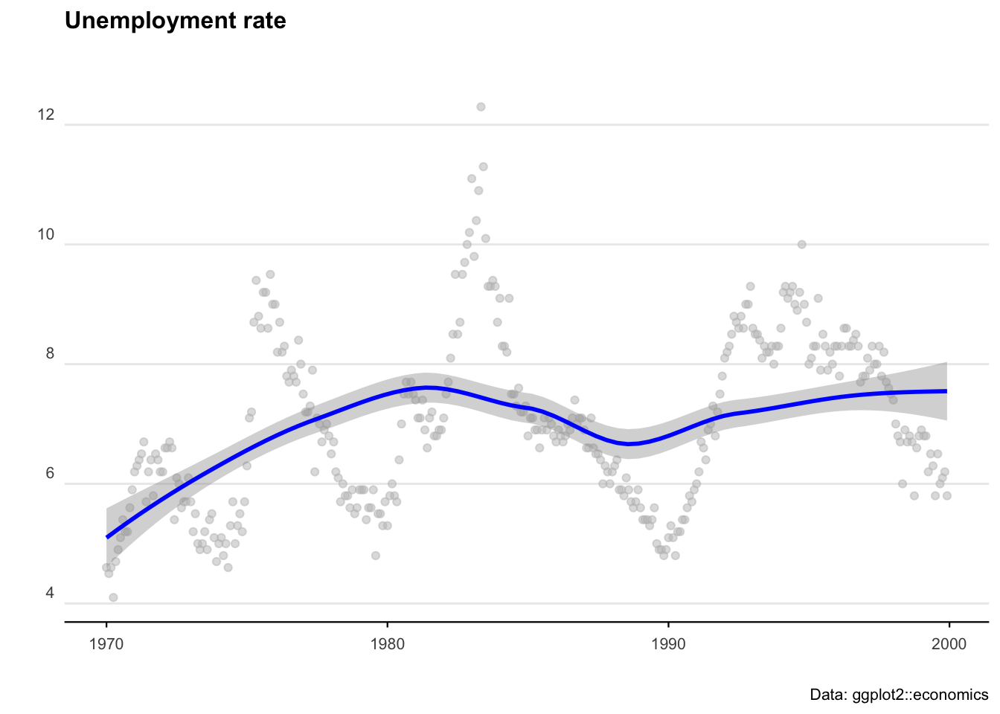
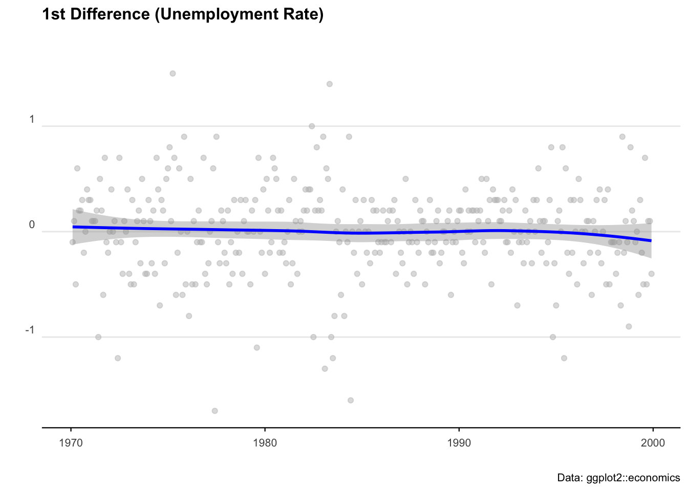
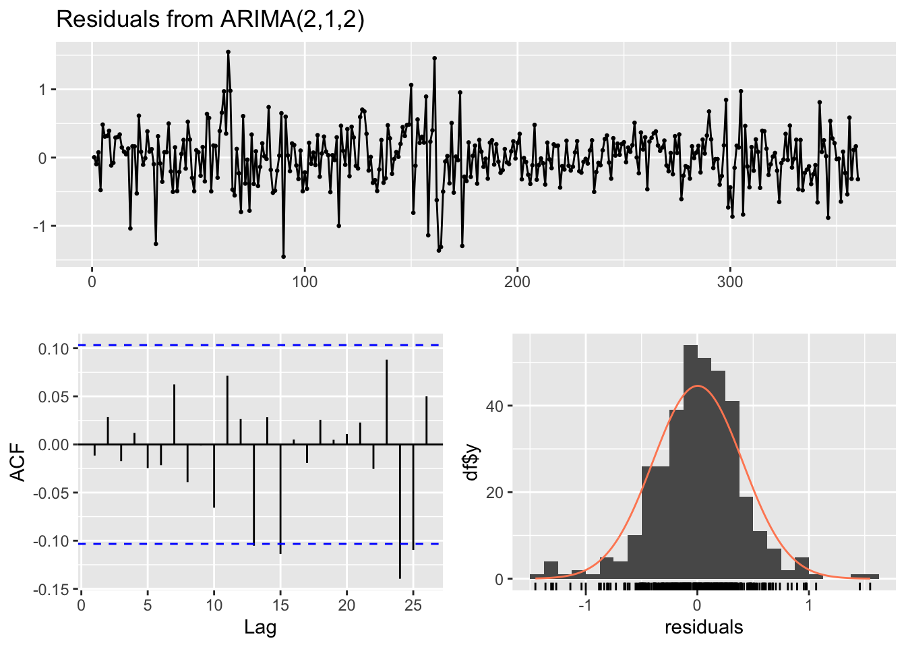
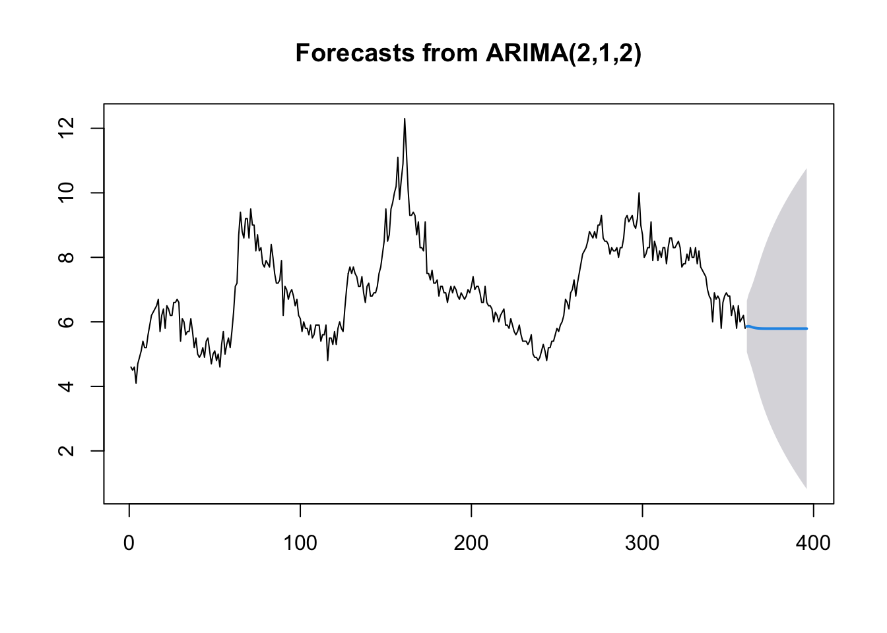
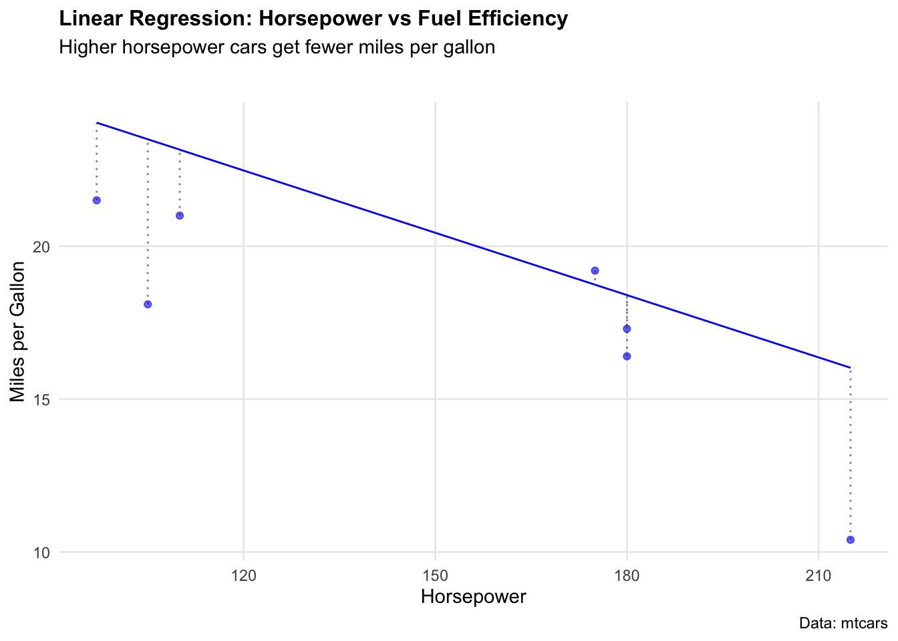

# Load in required packages
library(tidyverse) # Includes ggplot2, dplyr, purrr, stringr, etc.
library(ggridges) # For ridge plots
library(forecast) # Time series forecasting
library(ggrepel) # For better text label placement
library(viridis) # Color scales
library(readxl) # Excel file reading
library(lubridate) # Date and time manipulation
library(gapminder) # Gapminder data for examples
library(ggalt) # Additional ggplot2 geoms
library(scales) # Scale functions for ggplot2
library(readrba) # Get aus econ dataForecasting
So, we’ve got a time series dataset… but what is a reasonable forecast for how it might behave in the future?
Sure we can build a confidence interval (as we learned in the previous chapter) and figure out a reasonable value - but what about forecasting for multiple periods into the future?
That’s where we need to build models. Let’s load in some packages.
We’ll start with some pre-loaded time series data. The ggplot2 package includes a data set called ‘economics’ that contains US economic indicators from the 1960’s to 2015.
econ_data <- economics %>% dplyr::select(c("date", "uempmed"))
econ_data <- econ_data %>% dplyr::filter((date >= as.Date("1970-01-01") &
date <= as.Date("1999-12-31")))As a side note: We can also get Australian unemployment rate data using the readrba function.
aus_unemp_rate <- readrba::read_rba(series_id = "GLFSURSA")
head(aus_unemp_rate)Let’s plot the US data to see what we are working with.
ggplot(econ_data) +
geom_point(aes(x = date, y = uempmed), col = "grey", alpha = 0.5) +
geom_smooth(aes(x = date, y = uempmed), col = "blue") +
labs(
title = "Unemployment rate",
caption = "Data: ggplot2::economics",
x = "",
y = ""
) +
theme_minimal() +
theme(
plot.title = element_text(face = "bold", size = 12, margin = ggplot2::margin(0, 0, 25, 0)),
plot.subtitle = element_text(size = 11),
plot.caption = element_text(size = 8),
axis.text = element_text(size = 8),
axis.title.y = element_text(margin = ggplot2::margin(t = 0, r = 3, b = 0, l = 0)),
axis.text.y = element_text(vjust = -0.5, margin = ggplot2::margin(l = 20, r = -10)),
axis.line.x = element_line(colour = "black", size = 0.4),
axis.ticks.x = element_line(colour = "black", size = 0.4),
panel.grid.minor = element_blank(),
panel.grid.major.x = element_blank(),
legend.position = "bottom"
)
ARIMA
AutoRegressive Integrated Moving Average (ARIMA) models are a handy tool to have in the toolbox. An ARIMA model describes where Yt depends on its own lags. A moving average (MA only) model is one where Yt depends only on the lagged forecast errors. We combine these together (technically we integrate them) and get ARIMA.
When working with ARIMAs, we need to ‘difference’ our series to make it stationary.
We check if it is stationary using the augmented Dickey-Fuller test. The null hypothesis assumes that the series is non-stationary. A series is said to be stationary when its mean, variance, and autocovariance don’t change much over time.
# Test for stationarity
aTSA::adf.test(econ_data$uempmed)
# See the auto correlation
acf(econ_data$uempmed)
# Identify partial auto correlation
pacf(econ_data$uempmed)
# Take the first differences of the series
econ_data <- econ_data %>% mutate(diff = uempmed - lag(uempmed))
# Plot the first differences
ggplot(econ_data, aes(x = date, y = diff)) +
geom_point(col = "grey", alpha = 0.5) +
geom_smooth(col = "blue") +
labs(
title = "1st Difference (Unemployment Rate)",
caption = "Data: ggplot2::economics",
x = "",
y = ""
) +
theme_minimal() +
theme(
legend.position = "bottom",
plot.title = element_text(face = "bold", size = 12, margin = ggplot2::margin(0, 0, 25, 0)),
plot.subtitle = element_text(size = 11),
plot.caption = element_text(size = 8),
axis.text = element_text(size = 8),
axis.title.y = element_text(margin = ggplot2::margin(t = 0, r = 3, b = 0, l = 0)),
axis.text.y = element_text(vjust = -0.5, margin = ggplot2::margin(l = 20, r = -10)),
axis.line.x = element_line(colour = "black", size = 0.4),
axis.ticks.x = element_line(colour = "black", size = 0.4),
panel.grid.minor = element_blank(),
panel.grid.major.x = element_blank()
)
# Fit an ARIMA model
ARIMA_model <- forecast::auto.arima(econ_data$uempmed)
# Display model summary and residual diagnostics
summary(ARIMA_model)
forecast::checkresiduals(ARIMA_model)
# Forecast for the next 36 time periods
ARIMA_forecast <- forecast::forecast(ARIMA_model, h = 36, level = c(95))
# Plot the forecast
plot(ARIMA_forecast)
Machine learning
There probably isn’t a hotter term this decade than ‘machine learning’. But the principles of getting machines to perform operations based on unknown inputs has been around for the best part of 100 years. ‘Figure it out’ is now an instruction you can give a computer — and with careful programming and enough data, we can get pretty close.
The modern standard for machine learning in R is tidymodels — a collection of packages that gives you a clean, consistent way to build, train, and evaluate models. It’s replaced the older caret package and is now the go-to approach for most R users doing ML work.
library(tidymodels)
library(ranger) # Fast random forest engineLinear regression with tidymodels
We know that a model is just any function (of one or more variables) that helps to explain observations. Let’s start with the simplest case: a linear regression predicting miles per gallon from horsepower using the mtcars dataset.
The nice thing about tidymodels is that every model follows the same pattern: define the model spec, bundle it into a workflow, fit it, then evaluate. Once you’ve learned it once, swapping between model types is trivial.
data(mtcars)
# Split into training (80%) and testing (20%) sets
set.seed(123)
mtcars_split <- initial_split(mtcars, prop = 0.8)
mtcars_train <- training(mtcars_split)
mtcars_test <- testing(mtcars_split)
# Define a linear regression model
lm_spec <- linear_reg() %>%
set_engine("lm")
# Bundle model + formula into a workflow
lm_workflow <- workflow() %>%
add_model(lm_spec) %>%
add_formula(mpg ~ hp)
# Fit on training data
lm_fit <- lm_workflow %>% fit(data = mtcars_train)We can visualise how well the model fits by plotting predicted vs actual values.
# Generate predictions on test set
lm_preds <- predict(lm_fit, mtcars_test) %>% bind_cols(mtcars_test)
ggplot(lm_preds, aes(x = hp)) +
geom_point(aes(y = mpg), colour = "blue", alpha = 0.6) +
geom_line(aes(y = .pred), colour = "blue") +
geom_segment(aes(y = mpg, yend = .pred, xend = hp),
colour = "black", alpha = 0.5, linetype = "dotted"
) +
labs(
title = "Linear Regression: Horsepower vs Fuel Efficiency",
subtitle = "Higher horsepower cars get fewer miles per gallon",
caption = "Data: mtcars",
x = "Horsepower",
y = "Miles per Gallon"
) +
theme_minimal() +
theme(
plot.title = element_text(face = "bold", size = 12),
plot.subtitle = element_text(size = 11, margin = ggplot2::margin(b = 25)),
panel.grid.minor = element_blank()
)
To put a number on how well the model performed, yardstick (part of tidymodels) gives us RMSE, MAE, and R² in a single call — no manual calculations needed.
metrics(lm_preds, truth = mpg, estimate = .pred)Random forest
True machine learning takes this further by building many models across many parameter combinations to find the best predictors. Random forests are one of the most reliable approaches — they combine hundreds of decision trees and average their predictions, reducing overfitting.
We’ll use the Boston housing dataset to predict median home values (medv) from neighbourhood characteristics.
# Load Boston dataset
data("Boston", package = "MASS")
# Split into training (80%) and testing (20%)
set.seed(123)
boston_split <- initial_split(Boston, prop = 0.8)
boston_train <- training(boston_split)
boston_test <- testing(boston_split)We define a random forest model using rand_forest() with the ranger engine — a fast, modern implementation.
# Define random forest model
rf_spec <- rand_forest(trees = 500) %>%
set_engine("ranger") %>%
set_mode("regression")
# Bundle into workflow
rf_workflow <- workflow() %>%
add_model(rf_spec) %>%
add_formula(medv ~ .)
# Fit on training data
rf_fit <- rf_workflow %>% fit(data = boston_train)Now evaluate performance on the held-out test set.
# Generate predictions
rf_preds <- predict(rf_fit, boston_test) %>% bind_cols(boston_test)
# Evaluate
metrics(rf_preds, truth = medv, estimate = .pred)Comparing models
One of the best things about tidymodels is how easy it is to swap models in and out. Here we run a plain linear regression on the same Boston data and compare RMSE directly — same workflow, different model spec.
# Linear regression on Boston data
lm_boston_spec <- linear_reg() %>% set_engine("lm")
lm_boston_fit <- workflow() %>%
add_model(lm_boston_spec) %>%
add_formula(medv ~ .) %>%
fit(data = boston_train)
lm_boston_preds <- predict(lm_boston_fit, boston_test) %>% bind_cols(boston_test)
# Compare RMSE
rf_rmse <- rmse(rf_preds, truth = medv, estimate = .pred)$.estimate
lm_rmse <- rmse(lm_boston_preds, truth = medv, estimate = .pred)$.estimate
cat("Random forest RMSE:", round(rf_rmse, 2), "\n")
cat("Linear regression RMSE:", round(lm_rmse, 2), "\n")The random forest will typically outperform linear regression on this dataset — it captures non-linear relationships between neighbourhood characteristics and home values that a straight line cannot.
As we see, our randomForest model performed much better, with a RMSE of 2.96 compared to 4.58.